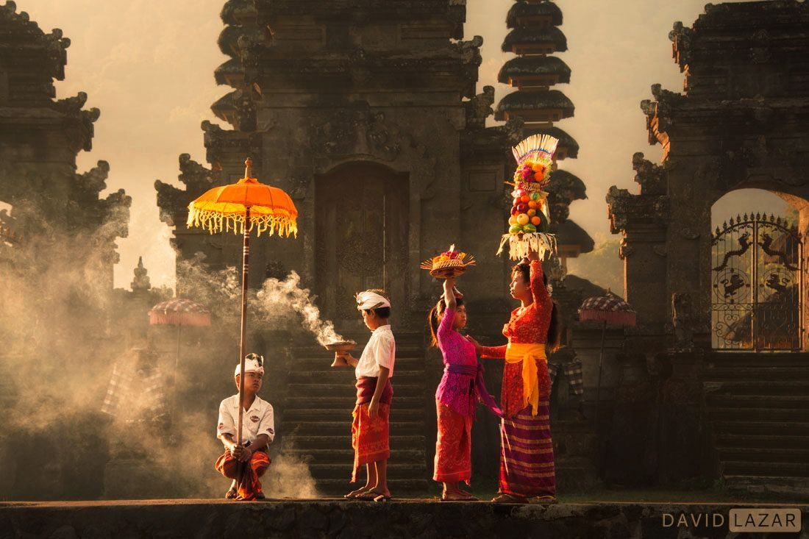
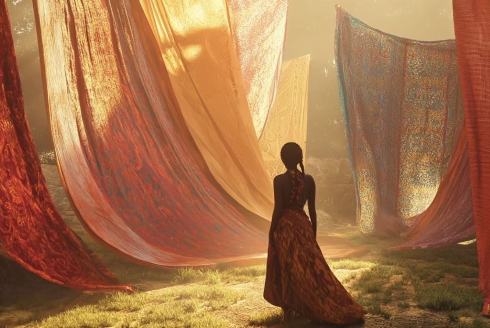
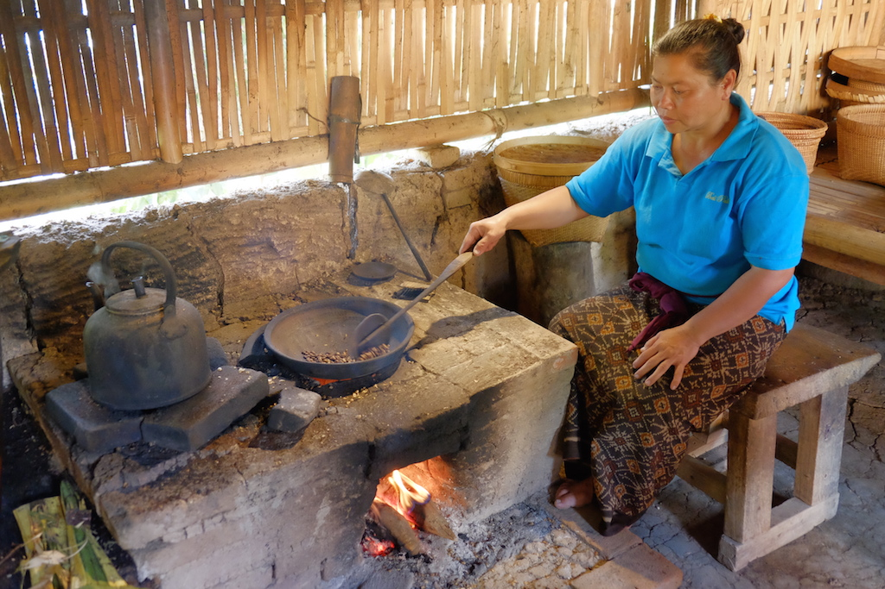

Jelajahi sisi Bali
yang jarang dilihat.
Ceritakan perjalanan yang kamu inginkan. Asisten AI menyusun jadwal kegiatan alam dan budaya bersama warga lokal, mengisi kalender kamu, dan merinci biayanya.
Ceritakan perjalanan yang kamu inginkan. Asisten AI menyusun jadwal kegiatan alam dan budaya bersama warga lokal, mengisi kalender kamu, dan merinci biayanya.
Pathora mempertemukan kamu dengan kegiatan yang dipandu warga dan komunitas lokal, lalu mengaturnya ke dalam satu rencana perjalanan.

01Kegiatan alam dan budaya yang dipandu warga, tersebar dari pesisir sampai dataran tinggi.

02Asisten AI mengatur jadwal dengan memperhitungkan cuaca, keramaian, dan hari raya adat.

03Ajukan ke host lokal, lalu bayar setelah kegiatan dipastikan tersedia.
Dari belajar membaca lontar sampai trekking ke air terjun. Setiap kegiatan dijalankan warga yang menjaga tempatnya, difokuskan di Bali Timur.
Dari ide sampai kegiatan terkonfirmasi, semuanya terjadi di satu tempat.
Tulis durasi, suasana, dan anggaran. Asisten AI menyusun jadwal berdasarkan cuaca, keramaian, dan hari raya adat.
Tekan Tambah pada kegiatan yang kamu suka. Kegiatan langsung masuk kalender dan ringkasan biaya di sisi kanan.
Permintaan dikirim ke host lokal. Host menyetujui atau menolak sesuai jadwal dan kuotanya.
Kamu baru membayar ketika kegiatan dipastikan tersedia. Jika ditolak, asisten menawarkan pengganti.

Sebagian besar kunjungan menumpuk di Bali Selatan, padahal kegiatan alam dan budaya yang bermakna tersebar di seluruh pulau.
wisatawan mancanegara datang ke Bali pada 2025, naik 9,72 persen dari tahun sebelumnya.
Dinas Pariwisata Provinsi Bali, 2026wisatawan mencari pengalaman autentik yang mewakili budaya lokal.
Booking.com, 2025, survei 32.000 responden di 34 negaraingin uang yang mereka belanjakan kembali ke komunitas lokal.
Booking.com, 2025, survei globalAngka Booking.com berasal dari responden global dan tidak mewakili wisatawan Bali secara langsung. Pathora menuliskan manfaat tiap kegiatan sebagai informasi spesifik dari host, bukan sebagai klaim dampak.
Setiap kegiatan yang kamu selesaikan bersama host mendapat satu stempel. Kumpulkan stempel dari seluruh pulau sebagai catatan perjalananmu.
Lihat Paspor AlamPaket dikelola di dalam aplikasi setelah kamu membuat akun.
Keduanya bisa. Trip dimulai sebagai perjalanan pribadi. Kapan pun kamu ingin, undang teman untuk berbagi kalender, melihat hari berhalangan masing-masing, dan membagi biaya.
Setelah host menyetujui permintaan kamu. Kamu tidak ditagih saat mengajukan.
Asisten menawarkan alternatif otomatis, misalnya kegiatan lain pada hari yang sama, atau kegiatan yang sama pada tanggal lain yang masih tersedia.
Asisten bekerja dari data kegiatan yang dikurasi, dan rekomendasinya bisa langsung ditambahkan ke rencana.
Daftar sebagai host lokal di bagian bawah halaman ini. Kamu menentukan jadwal, kuota, dan hari tutup sendiri melalui Studio Host.
Daftarkan sebagai host lokal. Kamu mengatur jadwal dan kuota, menerima permintaan di Studio Host, dan tidak membayar biaya bulanan.
Daftar sebagai hostSudah terdaftar sebagai host? Masuk ke Studio Host